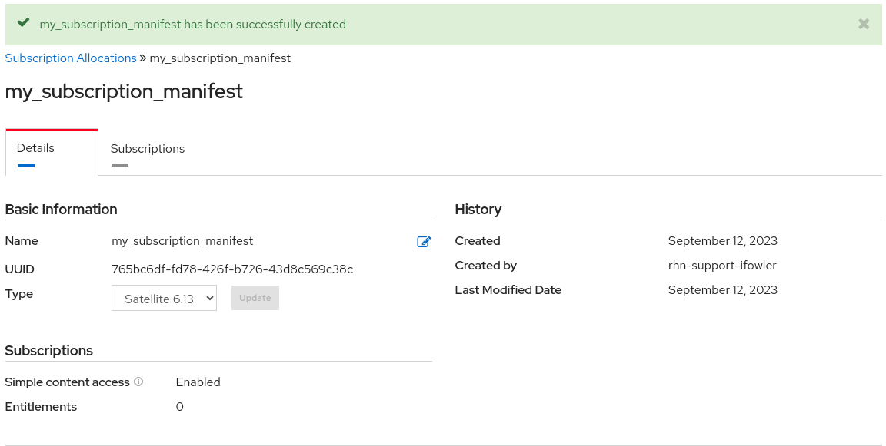
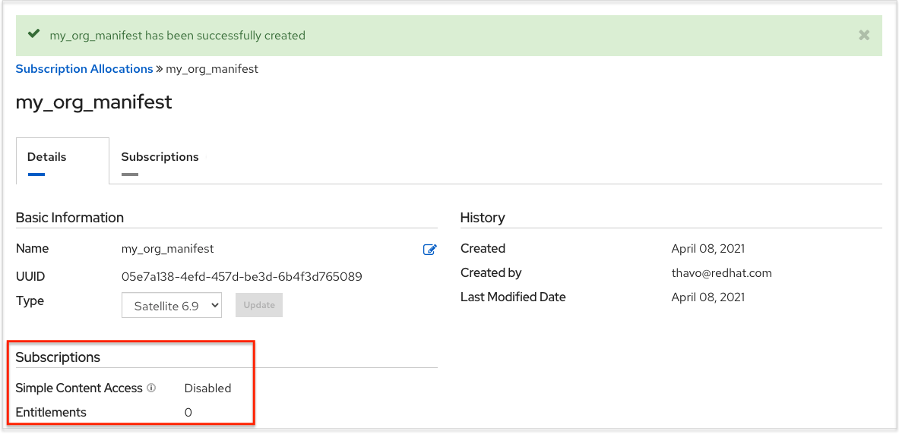
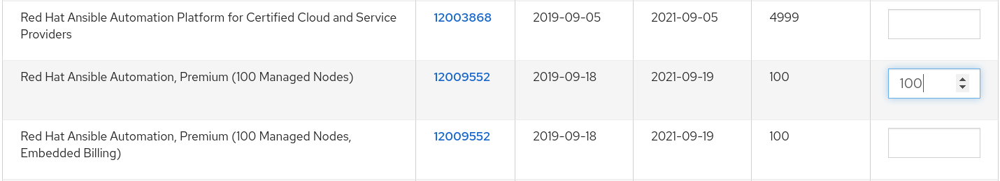
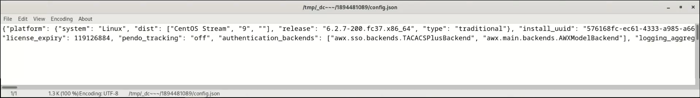
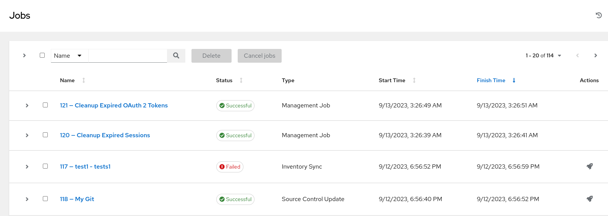
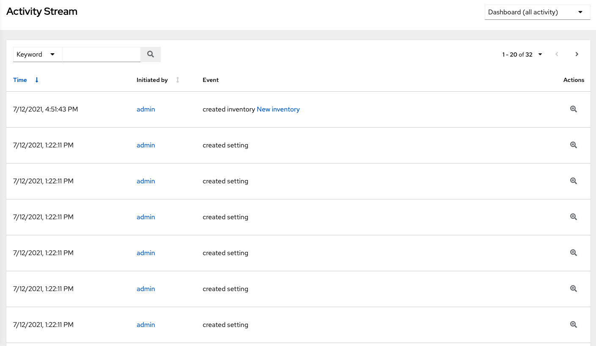
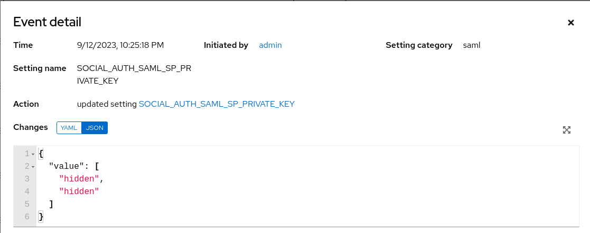

Thank you for your interest in Red Hat Ansible Automation Platform automation controller. Automation controller helps teams manage complex multi-tier deployments by adding control, knowledge, and delegation to Ansible-powered environments.
The Automation controller User Guide describes all of the functionality available in automation controller. It assumes moderate familiarity with Ansible, including concepts such as Playbooks, Variables, and Tags. For more information on these and other Ansible concepts, see the Ansible documentation at https://docs.ansible.com/
Making open source more inclusive
Red Hat is committed to replacing problematic language in our code, documentation, and web properties. We are beginning with these four terms: master, slave, blacklist, and whitelist. Because of the enormity of this endeavor, these changes will be implemented gradually over several upcoming releases. For more details, see our CTO Chris Wright’s message.
Providing feedback on Red Hat documentation
We appreciate your feedback on our technical content and encourage you to tell us what you think. If you’d like to add comments, provide insights, correct a typo, or even ask a question, you can do so directly in the documentation.
|
Note
|
You must have a Red Hat account and be logged in to the customer portal. |
To submit documentation feedback from the customer portal, do the following:
-
Select the Multi-page HTML format.
-
Click the Feedback button at the top-right of the document.
-
Highlight the section of text where you want to provide feedback.
-
Click the Add Feedback dialog next to your highlighted text.
-
Enter your feedback in the text box on the right of the page and then click Submit.
We automatically create a tracking issue each time you submit feedback. Open the link that is displayed after you click Submit and start watching the issue or add more comments.
1. Automation controller overview
Thank you for your interest in Red Hat Ansible Automation Platform. Ansible Automation Platform makes it possible for users across an organization to share, vet, and manage automation content by means of a simple, powerful, and agentless technical implementation. IT managers can provide guidelines on how automation is applied to individual teams. Meanwhile, automation developers retain the freedom to write tasks that use existing knowledge, without the operational overhead of conforming to complex tools and frameworks. It is a more secure and stable foundation for deploying end-to-end automation solutions, from hybrid cloud to the edge.
Ansible Automation Platform includes automation controller, which enables users to define, operate, scale, and delegate automation across their enterprise.
1.1. Real-time playbook output and exploration
Automation controller enables you to watch playbooks run in real time, seeing each host as they check in. You can go back and explore the results for specific tasks and hosts in great detail; search for specific plays or hosts and see just those results, or locate errors that need to be corrected.
1.2. “Push Button” automation
Automation controller enables you to access your favorite projects and re-trigger execution from the web interface. Automation controller asks for input variables, prompts for your credentials, starts and monitors jobs, and displays results and host history.
1.3. Simplified role-based access control and auditing
Automation controller enables you to:
-
Grant permissions to perform a specific task (such as to view, create, or modify a file) to different teams or explicit users through role-based access control (RBAC).
-
Keep some projects private, while enabling some users to edit inventories, and others to run playbooks against certain systems, either in check (dry run) or live mode.
-
Enable certain users to use credentials without exposing the credentials to them.
Regardless of what you do, automation controller records the history of operations and who made them, including objects edited and jobs launched.
If you want to give any user or team permissions to use a job template, you can assign permissions directly on the job template. Credentials are full objects in the automation controller RBAC system, and can be assigned to multiple users or teams for use.
Automation controller includes an Auditor type, who can see all aspects of the systems automation, but has no permission to run or change automation, for those that need a system-level auditor. This can also be useful for a service account that scrapes automation information from the REST API. For more information, see Role-Based Access Controls.
1.4. Cloud and autoscaling flexibility
Automation controller features a powerful optional provisioning callback feature that enables nodes to request configuration on demand.
This is an ideal solution for a cloud auto-scaling scenario, integrating with provisioning servers like Cobbler, or when dealing with managed systems with unpredictable uptimes.
It requires no management software to be installed on remote nodes, the callback solution can be triggered by a call to curl or wget, and can be embedded in init scripts, kickstarts, or preseeds.
Access is controlled such that only machines listed in the inventory can request configuration.
1.5. The ideal RESTful API
The automation controller REST API is the ideal RESTful API for a systems management application, with all resources fully discoverable, paginated, searchable, and well modeled. A styled API browser enables API exploration from the API root at http://<server name>/api/, showing off every resource and relation. Everything that can be done in the user interface can be done in the API.
1.6. Backup and restore
Ansible Automation Platform can backup and restore your systems or systems, making it easy for you to backup and replicate your instance as required.
1.7. Ansible Galaxy integration
By including an Ansible Galaxy requirements.yml file in your project directory, automation controller automatically fetches the roles your playbook needs from Galaxy, GitHub, or your local source control.
For more information, see Ansible Galaxy Support.
1.8. Inventory support for OpenStack
Dynamic inventory support is available for OpenStack. This enables you to easily target any of the virtual machines or images running in your OpenStack cloud.
1.9. Remote command execution
When you want to perform a simple task on a few hosts, whether adding a single user, updating a single security vulnerability, or restarting a misbehaving service, automation controller includes remote command execution. Any task that you can describe as a single Ansible play can be run on a host or group of hosts in your inventory, enabling you to manage your systems quickly and easily. Plus, it is all backed by an RBAC engine and detailed audit logging, removing any questions regarding who has done what to what machines.
1.10. System tracking
You can collect facts using the fact caching feature. For more information, see Fact Caching.
1.11. Integrated notifications
Automation controller enables you to easily keep track of the status of your automation.
You can configure the following notifications:
-
stackable notifications for job templates, projects, or entire organizations
-
different notifications for job start, job success, job failure, and job approval (for workflow nodes)
The following notification sources are supported:
-
Email
-
Grafana
-
IRC
-
Mattermost
-
PagerDuty
-
Rocket.Chat
-
Slack
-
Twilio
-
Webhook (post to an arbitrary webhook, for integration into other tools)
You can also customize notification messages for each of the preceding notification types.
1.12. Red Hat Satellite integration
Dynamic inventory sources for Red Hat Satellite 6 are supported.
1.13. Red Hat Insights integration
Automation controller supports integration with Red Hat Insights, enabling Insights playbooks to be used as an Ansible Automation Platform project.
1.14. User Interface
The user interface is organized with intuitive navigational elements. Information is displayed at-a-glance, so you can find and use the automation you need. Compact and expanded viewing modes show and hide information as required, and built-in attributes make it easy to sort.
1.15. Custom Virtual Environments
Custom Ansible environment support enables you to have different Ansible environments and specify custom paths for different teams and jobs.
1.16. Authentication enhancements
Automation controller supports:
-
LDAP
-
SAML
-
token-based authentication
LDAP and SAML support enable you to integrate your enterprise account information in a more flexible manner.
Token-based authentication permits authentication of third-party tools and services with automation controller through integrated OAuth 2 token support.
1.17. Cluster management
Run-time management of cluster groups enables configurable scaling.
1.18. Container platform support
Ansible Automation Platform is available as a containerized pod service for Red Hat OpenShift Container Platform that can be scaled up and down as required.
1.19. Workflow enhancements
To model your complex provisioning, deployment, and orchestration workflows, you can use automation controller expanded workflows in several ways:
-
Inventory overrides for Workflows You can override an inventory across a workflow at workflow definition time, or at launch time. Automation controller enables you to define your application deployment workflows, and then re-use them in multiple environments.
-
Convergence nodes for Workflows When modeling complex processes, you must sometimes wait for multiple steps to finish before proceeding. Automation controller workflows can replicate this; workflow steps can wait for any number of previous workflow steps to complete properly before proceeding.
-
Workflow Nesting You can re-use individual workflows as components of a larger workflow. Examples include combining provisioning and application deployment workflows into a single workflow.
-
Workflow Pause and Approval You can build workflows containing approval nodes that require user intervention. This makes it possible to pause workflows in between playbooks so that a user can give approval (or denial) for continuing on to the next step in the workflow.
1.20. Job distribution
Automation controller offers the ability to take a fact gathering or configuration job running across thousands of machines and divide it into slices that can be distributed across your automation controller cluster for increased reliability, faster job completion, and improved cluster use. If you need to change a parameter across 15,000 switches at scale, or gather information across your multi-thousand-node RHEL estate, automation controller provides the means.
1.21. Support for deployment in a FIPS-enabled environment
Automation controller deploys and runs in restricted modes such as FIPS.
1.22. Limit the number of hosts per organization
Many large organizations have instances shared among many organizations. To ensure that one organization cannot use all the licensed hosts, this feature enables superusers to set a specified upper limit on how many licensed hosts can be allocated to each organization. The automation controller algorithm factors changes in the limit for an organization and the number of total hosts across all organizations. Inventory updates fail if an inventory synchronization brings an organization out of compliance with the policy. Additionally, superusers are able to over-allocate their licenses, with a warning.
1.23. Inventory plugins
Beginning with Ansible 2.9, the following inventory plugins are used from upstream collections:
-
amazon.aws.aws_ec2 -
community.vmware.vmware_vm_inventory -
azure.azcollection.azure_rm -
google.cloud.gcp_compute -
theforeman.foreman.foreman -
openstack.cloud.openstack -
ovirt.ovirt.ovirt -
awx.awx.tower
1.24. Secret management system
With a secret management system, external credentials are stored and supplied for use in automation controller so you need not provide them directly.
1.25. Automation hub integration
Automation hub acts as a content provider for automation controller, requiring both an automation controller deployment and an automation hub deployment running alongside each other.
2. Automation controller licensing, updates and support
Red Hat Ansible Automation Platform controller ("{Controller Name}") is a software product provided as part of an annual Red Hat Ansible Automation Platform subscription entered into between you and Red Hat, Inc. ("Red Hat").
Ansible is an open source software project and is licensed under the GNU General Public License version 3, as described in the Ansible Source Code
You must have valid subscriptions attached before installing Ansible Automation Platform. See Attaching Subscriptions for detail.
2.1. Support
Red Hat offers support to paid Red Hat Ansible Automation Platform customers.
If you or your company has purchased a subscription for Ansible Automation Platform, you can contact the support team at https://access.redhat.com
For more information on the levels of support for your Ansible Automation Platform subscription, see Subscription Types.
For information on what is covered under an Ansible Automation Platform subscription, see Scope of Coverage and Scope of Support
2.2. Trial and evaluation
You require a license to run automation controller. However, there is no fee for a trial license.
Trial licenses for Ansible Automation Platform are available at: http://ansible.com/license
Support is not included in a trial license or during an evaluation of the automation controller software.
2.3. Ansible Automation Platform component licenses
To view the license information for the components included in automation controller, refer to /usr/share/doc/automation-controller-<version>/README
where <version> refers to the version of automation controller you have installed.
To view a specific license, refer to /usr/share/doc/automation-controller-<version>/*.txt
where * is the license file name to which you are referring.
2.4. Node counting in licenses
The automation controller license defines the number of Managed Nodes that can be managed as part of a Red Hat Ansible Automation Platform subscription.
A typical license says 'License Count: 500', which sets the maximum number of Managed Nodes at 500.
For more information on managed node requirements for licensing, see https://access.redhat.com/articles/3331481
|
Note
|
Ansible does not recycle node counts or reset automated hosts. |
3. Logging into the automation controller after installation
After you install automation controller, you must log in.
-
With the login information provided after your installation completed, open a web browser and log in to the automation controller by navigating to its server URL at: https://<CONTROLLER_SERVER_NAME>/
-
After you have accessed the controller user interface (UI), use the credentials specified during the installation process to login. The default username is admin. The password for admin is the value specified for admin_password in your inventory file.
-
Edit these defaults by selecting Users from the navigation panel:
-
Click the the More Actions icon ⋮ next to the desired user.
-
Click Edit.
-
Edit the required details and click Save.
-
4. Managing your Ansible automation controller subscription
Before you can use automation controller, you must have a valid subscription, which authorizes its use.
4.1. Subscription Types
Red Hat Ansible Automation Platform is provided at various levels of support and number of machines as an annual subscription.
-
Standard:
-
Manage any size environment
-
Enterprise 8x5 support and SLA
-
Maintenance and upgrades included
-
Review the SLA at https://access.redhat.com/support/offerings/production/sla
-
Review the Red Hat Support Severity Level Definitions at https://access.redhat.com/support/policy/severity
-
-
Premium:
-
Manage any size environment, including mission-critical environments
-
Premium 24x7 support and SLA
-
Maintenance and upgrades included
-
Review the SLA at https://access.redhat.com/support/offerings/production/sla
-
Review the Red Hat Support Severity Level Definitions at https://access.redhat.com/support/policy/severity
-
All subscription levels include regular updates and releases of automation controller, Ansible, and any other components of the Platform.
For more information, contact Ansible through the Red Hat Customer Portal at https://access.redhat.com/ or at http://www.ansible.com/contact-us/.
4.2. Obtaining an authorized Ansible automation controller subscription
If you already have a subscription to a Red Hat product, you can acquire an automation controller subscription through that subscription. If not, you can request a trial subscription.
-
If you already have a Red Hat Ansible Automation Platform subscription, use your Red Hat customer credentials when you launch the automation controller to access your subscription information. See Importing a subscription.
-
If you have a non-Ansible Red Hat or Satellite subscription, access automation controller with one of these methods:
-
Enter your username and password on the license page.
-
Obtain a subscriptions manifest from the Subscription Allocations page on the Red Hat Customer Portal. For more information, see Obtaining a subscriptions manifest.
-
If you do not have a Red Hat Ansible Automation Platform subscription, go to Try Red Hat Ansible Automation Platform and request a trial subscription.
-
To understand what is supported with your subscription, see Automation controller licensing, updates and support. If you have issues with your subscription, contact your Sales Account Manager or Red Hat Customer Service at: https://access.redhat.com/support/contact/customerService/.
4.3. Obtaining a subscriptions manifest
To upload a subscriptions manifest, first set up your subscription allocations:
Setting up a subscription allocation
-
Navigate to https://access.redhat.com/management/subscription_allocations. The Subscriptions Allocations page contains no subscriptions until you create one.
-
Click Create New subscription allocation to create a new subscription allocation.
NoteIf the Create New subscription allocation button is not present, or disabled, you do not have the proper permissions to create subscription allocations. To create a subscription allocation, you must either be an Administrator on the Customer Portal, or have the Manage Your Subscriptions role. Contact an
access.redhat.comadministrator, or organization administrator who can grant you permission to manage subscriptions. -
Enter a Name for your subscription and select Satellite 6.13 from the Type drop-down menu.
 -
Click Create.
-
When your subscriptions manifest is successfully created, the relevant information is displayed. The number indicated next to Entitlements indicates the number of entitlements associated with your subscription.

Setting up a subscripions manifest
To obtain a subscriptions manifest, you must add an entitlement to your subscriptions through the Subscriptions tab.
-
Click the Subscriptions tab.
-
If there are no subscriptions to display, click Add Subscriptions.
-
The following screen enables you to select and add entitlements to put in the manifest file.
You can select multiple Ansible Automation Platform subscriptions in your subscription allocation. Valid Ansible Automation Platform subscriptions commonly go by the name "Red Hat Ansible Automation…".
-
Specify the number of entitlements or managed nodes to put in the manifest file. This enables you to split up a subscription, for example: 400 nodes on a development cluster and 600 nodes for the production cluster, out of a 1000 node subscription.
NoteYou can apply multiple subscriptions to a single installation by adding multiple subscriptions of the same type to a manifest file and uploading them. Similarly, a subset of a subscription can be applied by only allocating a portion of the subscription when creating the manifest.
-
Click Submit.
-
The allocations you specified, when successfully added, are displayed in the Subscriptions tab.
-
Click the Details tab to access the subscription manifest file.
-
Click Export Manifest to export the manifest file for this subscription. A folder pre-pended with
manifest_is downloaded to your local drive. Multiple subscriptions with the same SKU are be aggregated. -
When you have a subscription manifest, go to the Subscription screen.
-
Click Browse to upload the entire manifest file.
-
Navigate to the location where the file is saved. Do not open it or upload individual parts of it.
4.4. Importing a subscription
After you have obtained an authorized Ansible Automation Platform subscription, you must first import it into the automation controller system before you can begin using it.
-
You have obtained a subscriptions manifest. For more information, see Obtaining a subscriptions manifest in the Automation Controller User Guide.
-
Launch controller for the first time. The Subscription Management screen is displayed.

-
Retrieve and and import your subscription by completing either of the following steps:
-
If you have obtained a subscription manifest, upload it by navigating to the location where the file is saved (the subscription manifest is the complete .zip file, and not only its component parts).
NoteIf the Browse option in the subscription manifest option is disabled, clear the username and password fields to enable it.
The subscription metadata is then retrieved from the RHSM/Satellite API, or from the manifest provided. If multiple subscription counts were applied in a single installation, automation controller combines the counts but uses the earliest expiration date as the expiry (at which point you must refresh your subscription).
-
If you are using your Red Hat customer credentials, enter your username and password on the license page. Use your Satellite username or password if your automation controller cluster nodes are registered to Satellite with Subscription Manager. After you enter your credentials, click Get Subscriptions.
Automation controller retrieves your configured subscription service. Then, it prompts you to choose the subscription that you want to run and applies that metadata to automation controller. You can log in over time and retrieve new subscriptions if you have renewed.
-
-
Click Next to proceed to Tracking and Insights. Tracking and insights collect data to help Red Hat improve the product and deliver a better user experience. For more information about data collection, see Usability Analytics and Data Collection. This option is checked by default, but you can opt out of any of the following:
-
User analytics. Collects data from the controller UI.
-
Insights Analytics. Provides a high level analysis of your automation with automation controller. It helps you to identify trends and anomalous use of the controller. For opt-in of Automation Analytics to be effective, your instance of automation controller must be running on Red Hat Enterprise Linux. For more information, see the Automation Analytics section.
NoteYou can change your analytics data collection preferences at any time, as described in the Usability Analytics and Data Collection section.
-
-
After you have specified your tracking and Insights preferences, click Next to proceed to the End User Agreement.
-
Review and check the I agree to the End User License Agreement checkbox and click Submit.
After your subscription is accepted, automation controller displays the subscription details and opens the Dashboard. To return to the Subscription settings screen from the Dashboard, select from the Subscription option in the navigation panel.
When your subscription expires (you can check this in the Subscription details of the Subscription settings window), you must renew it in automation controller by one of the preceding two methods.
If you encounter the "Error fetching licenses" message, check that you have the proper permissions required for the Satellite user. The automation controller administrator requires this to apply a subscription.
The Satellite username and password is used to query the Satellite API for existing subscriptions. From the Satellite API, the automation controller receives metadata about those subscriptions, then filters through to find valid subscriptions that you can apply. These are then displayed as valid subscription options in the UI.
The following Satellite roles grant proper access:
-
Custom with
view_subscriptionsandview_organizationsfilter -
Viewer
-
Administrator
-
Organization Administrator
-
Manager
Use the Custom role for your automation controller integration, as it is the most restrictive. For more information, see the Satellite documentation on managing users and roles.
|
Note
|
The System Administrator role is not equivalent to the Administrator user checkbox, and does not provide sufficient permissions to access the subscriptions API page. |
4.5. Adding a subscription manually
If you are unable to apply or update the subscription information using the user interface, you can upload the subscriptions manifest manually in an Ansible playbook using the license module in the ansible.controller collection:
- name: Set the license using a file license: manifest: "/tmp/my_manifest.zip"
For more information, see the Automation controller license module.
4.6. Attaching Subscriptions
You must have valid subscriptions attached before installing Ansible Automation Platform.
|
Note
|
Attaching subscriptions is unnecessary if your Red Hat account has enabled Simple Content Access Mode. However, you must register to Red Hat Subscription Management (RHSM) or Red Hat Satellite before installing Ansible Automation Platform. |
Use the following method to attach your subscription:
-
To find out the
pool_idof your subscription:# subscription-manager list --available --all | grep "Ansible Automation Platform" -B 3 -A 6
-
The command returns the following:
Subscription Name: Red Hat Ansible Automation Platform, Premium (5000 Managed Nodes) Provides: Red Hat Ansible Engine Red Hat Single Sign-On Red Hat Ansible Automation Platform SKU: MCT3695 Contract: ******** Pool ID: ******************** Provides Management: No Available: 4999 Suggested: 1
-
To attach this subscription:
# subscription-manager attach --pool=<pool_id>
-
If this is correct, and all nodes have attached, then the repositories will be found.
-
To check whether the subscription attached successfully:
# subscription-manager list --consumed
-
To remove this subscription:
#subscription-manager remove --pool=<pool_id>
4.7. Troubleshooting: Keeping your subscription in compliance
Your subscription has two possible statuses:
-
Compliant: Indicates that your subscription is appropriate for the number of hosts that you have automated within your subscription count.
-
Out of compliance: Indicates that you have exceeded the number of hosts in your subscription.
Compliance is computed as follows:
+
managed > manifest_limit => non-compliant managed =< manifest_limit => compliant
Where:
managed is the number of unique managed hosts without deletions, and
manifest_limit is the number of managed hosts in the subscription manifest.
Other important information displayed are:
-
Hosts automated: Host count automated by the job, which consumes the license count.
-
Hosts imported: Host count considering unique host names across all inventory sources (does not impact hosts remaining).
-
Hosts remaining: Total host count minus hosts automated.
-
Hosts deleted: Hosts that were deleted, freeing the license capacity.
-
Active hosts previously deleted: Number of hosts now active that were previously deleted.
For demonstration purposes, suppose you have a subscription capacity of 10 hosts:
-
Starting with 9 hosts, 2 hosts were added and 3 hosts were deleted, you now have 8 hosts (compliant).
-
3 hosts were automated again, now you have 11 hosts, which puts you over the subscription limit of 10 (non-compliant).
-
If you were to delete hosts, be sure to refresh the subscription details to see the change in count and status.
Select Host Metrics in the navigation panel to view the activity associated with hosts, such as those that have been automated and deleted. Each unique hostname is listed and sorted by the user’s preference.
|
Note
|
A scheduled task automatically updates these values on a weekly basis and deletes jobs with hosts that were last automated more than year ago. |
Delete unnecessary hosts directly from the Host Metrics view by selecting the desired hosts and clicking Delete. These are soft-deleted, meaning their records are not removed, but are not being used and thereby not counted towards your subscription.
4.8. Host metric utilities
Automation controller provides a way to generate a CSV output of the host metric data and host metric summary through the Command Line Interface (CLI) and to soft delete hosts in bulk through the API.
4.8.1. awx-manage utility
The awx-manage utility supports the following options:
$ awx-manage host_metric --csv
This command produces host metric data, a host metrics summary file, and a cluster info file. To package all the files into a single tarball for distribution and sharing use:
$ awx-manage host_metric --tarball
To specify the number of rows (<n>) to output to each file:
$ awx-manage host_metric --tarball --rows_per_file <n>
The folllowing is an example of a configuration file:

This JSON file is what gets sent to and consumed by Automation Analytics.
4.8.2. API endpoint functions
The API lists only non-deleted records and are sortable by last_automation and used_in_inventories columns.
Alternatively, you can use the host metric API endpoint,api/v2/host_metric to soft-delete hosts:
api/v2/host_metric <n> DELETE
A monthly scheduled task automatically deletes jobs that uses hosts from the Host Metric table that were last automated more than year ago.
5. The User Interface
The automation controller User Interface (UI) provides a graphical framework for your IT orchestration requirements. The navigation panel provides quick access to automation controller resources, such as Projects, Inventories, Job Templates, and Jobs.
|
Note
|
The automation controller UI is available for technical preview and is subject to change in future releases. To preview the new UI, click the Enable Preview of New User Interface toggle to On from the Miscellaneous System option of the Settings menu. After saving, logout and log back in to access the new UI from the preview banner. To return to the current UI, click the link on the top banner where indicated. |
Access your user profile, the About page, view related documentation, or log out using the icons in the page header.
You can view the activity stream for that user by clicking the Activity Stream icon.
5.1. Views
The automation controller UI provides several options for viewing information.
5.1.1. Dashboard View
Use the navigation menu to complete the following tasks:
-
Display different views
-
Navigate to your resources
-
Grant access to users
-
Administer automation controller features in the UI
-
From the navigation panel, select Views to hide or display the Views options.
-
The dashboard displays a summary of your current Job status.
-
You can filter the job status within a period of time or by job type.
-
-
You can also display summaries of Recent Jobs and Recent Templates.
The Recent Jobs tab displays which jobs were most recently run, their status, and the time at which they were run.

The Recent Templates tab displays a summary of the most recently used templates. You can also access this summary by selecting Templates from the navigation menu.

|
Note
|
Click Dashboard on the navigation panel, or the Ansible Automation Platform logo at any time to return to the Dashboard. |
5.1.2. Jobs view
-
From the navigation panel, select Jobs. This view displays the jobs that have run, including projects, templates, management jobs, SCM updates, and playbook runs.

5.1.3. Schedules view
This view shows all the scheduled jobs that are configured.

5.1.4. Activity Stream
-
From the navigation panel, select Activity Stream to display Activity Streams. Most screens have an Activity Stream icon.

An Activity Stream shows all changes for a particular object. For each change, the Activity Stream shows the time of the event, the user that initiated the event, and the action. The information displayed varies depending on the type of event. Click the Examine icon to display the event log for the change.

You can filter the Activity Stream by the initiating user, by system (if it was system initiated), or by any related object, such as a credential, job template, or schedule.
The Activity Stream on the main Dashboard shows the Activity Stream for the entire instance. Most pages permit viewing an activity stream filtered for that specific object.
5.1.5. Workflow Approvals
-
From the navigation panel, select Workflow Approvals to see your workflow approval queue. The list contains actions that require you to approve or deny before a job can proceed.
5.1.6. Host Metrics
-
From the navigation panel, select Host Metrics to see the activity associated with hosts, which includes counts on those that have been automated, used in inventories, and deleted.
For further information, see Troubleshooting: Keeping your subscription in compliance.
5.2. Resources Menu
The Resources menu provides access to the following components of automation controller:
-
Templates
-
Credentials
-
Projects
-
Inventories
-
Hosts
5.3. Access Menu
The Access menu enables you to configure who has permissions to automation controller resources:
-
Organizations
-
Users
-
Teams
5.4. Administration
The Administration menu provides access to the administrative options of automation controller. From here, you can create, view, and edit:
-
Credential_types
-
Notifications
-
Management_jobs
-
Instance_groups
-
Instances
-
Applications
-
Execution_environments
-
Topology_view
5.5. The Settings menu
Configure global and system-level settings using the Settings menu. The Settings menu provides access to automation controller configuration settings.
The Settings page enables administrators to configure the following settings:
-
Authentication
-
Jobs
-
System-level attributes
-
Customize the UI
-
Product license information
6. Automation controller search
Use automation controller’s' search tool for search and filter capabilities across multiple functions. An expandable "cheat-sheet" is available from the Advanced option from the Name menu in the search field.
From there, use the combination of Set Type, Key, and Lookup type to filter.

6.1. Tips for searching in automation controller
These searching tips assume that you are not searching hosts. Most of this section still applies to hosts but with some subtle differences.
-
The typical syntax of a search consists a field (left-hand side) and a value (right-hand side).
-
A colon is used to separate the field that you want to search from the value.
-
If the seach has no colon (see example 3) it is treated as a simple string search where
?search=foobaris sent.
The following are examples of syntax used for searching:
-
name:localhostIn this example, the string before the colon represents the field that you want to search on. If that string does not match something from Fields or Related Fields then it is treated the same way as in Example 3 (string search). The string after the colon is the string that you want to search for within the name attribute. -
organization.name:DefaultThis example shows a Related Field Search. The period inorganization.nameseparates the model from the field. Depending on how deep or complex the search is, you can have multiple periods in that part of the query. -
foobarThis is a simple string (key term) search that finds all instances of the search term using anicontainssearch against the name and description fields. If you use a space between terms, for examplefoo bar, then results that contain both terms are returned. If the terms are wrapped in quotes, for example,"foo bar", automation controller searches for the string with the terms appearing together.
Specific name searches search against the API name. For example, Management job in the user interface is system_job in the API.
. organization:Default This example shows a Related Field search but without specifying a field to go along with the organization.
This is supported by the API and is analogous to a simple string search but carried out against the organization (does an icontains search against both the name and description).
6.1.1. Values for search fields
To find values for certain fields, refer to the API endpoint for extensive options and their valid values.
For example, if you want to search against /api/v2/jobs > type field, you can find the values by performing an OPTIONS request to /api/v2/jobs and look for entries in the API for "type".
Additionally, you can view the related searches by scrolling to the bottom of each screen.
In the example for /api/v2/jobs, the related search shows:
"related_search_fields": [
"modified_by__search",
"project__search",
"project_update__search",
"credentials__search",
"unified_job_template__search",
"created_by__search",
"inventory__search",
"labels__search",
"schedule__search",
"webhook_credential__search",
"job_template__search",
"job_events__search",
"dependent_jobs__search",
"launch_config__search",
"unifiedjob_ptr__search",
"notifications__search",
"unified_job_node__search",
"instance_group__search",
"hosts__search",
"job_host_summaries__search"
The values for Fields come from the keys in a GET request.
url, related, and summary_fields are not used.
The values for Related Fields also come from the OPTIONS response, but from a different attribute.
Related Fields is populated by taking all the values from related_search_fields and stripping off the __search from the end.
Any search that does not start with a value from Fields or a value from the Related Fields, is treated as a generic string search.
Searching for localhost, for example, results in the UI sending ?search=localhost as a query parameter to the API endpoint.
This is a shortcut for an icontains search on the name and description fields.
6.1.2. Searching using values from related fields
Searching a Related Field requires you to start the search string with the Related Field. The following example describes how to search using values from the Related Field, organization.
The left-hand side of the search string must start with organization, for example, organization:Default.
Depending on the related field, you can provide more specific direction for the search by providing secondary and tertiary fields.
An example of this is to specify that you want to search for all job templates that use a project matching a certain name.
The syntax on this would look like: job_template.project.name:"A Project".
|
Note
|
This query executes against the |
6.1.3. Other search considerations
Be aware of the following issues when searching in automation controller:
-
There is currently no supported syntax for OR queries. All search terms are *AND*ed in the query parameters.
-
The left-hand portion of a search parameter can be wrapped in quotes to support searching for strings with spaces. For more information, see Tips for searching.
-
Currently, the values in the Fields are direct attributes expected to be returned in a GET request. Whenever you search against one of the values, automation controller carries out an
__icontainssearch. So, for example,name:localhostsends back?name__icontains=localhost. Automation controller currently performs this search for every Field value, evenid.
6.2. Sort
Where applicable, use the arrows in each column to sort by ascending order. The following is an example from the schedules list:

The direction of the arrow indicates the sort order of the column.
7. Supported Inventory plugin templates
After upgrade to 4.x, existing configurations are migrated to the new format that produces a backwards compatible inventory output. Use the following templates to aid in migrating your inventories to the new style inventory plugin output.
7.1. Amazon Web Services EC2
compose:
ansible_host: public_ip_address
ec2_account_id: owner_id
ec2_ami_launch_index: ami_launch_index | string
ec2_architecture: architecture
ec2_block_devices: dict(block_device_mappings | map(attribute='device_name') | list | zip(block_device_mappings | map(attribute='ebs.volume_id') | list))
ec2_client_token: client_token
ec2_dns_name: public_dns_name
ec2_ebs_optimized: ebs_optimized
ec2_eventsSet: events | default("")
ec2_group_name: placement.group_name
ec2_hypervisor: hypervisor
ec2_id: instance_id
ec2_image_id: image_id
ec2_instance_profile: iam_instance_profile | default("")
ec2_instance_type: instance_type
ec2_ip_address: public_ip_address
ec2_kernel: kernel_id | default("")
ec2_key_name: key_name
ec2_launch_time: launch_time | regex_replace(" ", "T") | regex_replace("(\+)(\d\d):(\d)(\d)$", ".\g<2>\g<3>Z")
ec2_monitored: monitoring.state in ['enabled', 'pending']
ec2_monitoring_state: monitoring.state
ec2_persistent: persistent | default(false)
ec2_placement: placement.availability_zone
ec2_platform: platform | default("")
ec2_private_dns_name: private_dns_name
ec2_private_ip_address: private_ip_address
ec2_public_dns_name: public_dns_name
ec2_ramdisk: ramdisk_id | default("")
ec2_reason: state_transition_reason
ec2_region: placement.region
ec2_requester_id: requester_id | default("")
ec2_root_device_name: root_device_name
ec2_root_device_type: root_device_type
ec2_security_group_ids: security_groups | map(attribute='group_id') | list | join(',')
ec2_security_group_names: security_groups | map(attribute='group_name') | list | join(',')
ec2_sourceDestCheck: source_dest_check | default(false) | lower | string
ec2_spot_instance_request_id: spot_instance_request_id | default("")
ec2_state: state.name
ec2_state_code: state.code
ec2_state_reason: state_reason.message if state_reason is defined else ""
ec2_subnet_id: subnet_id | default("")
ec2_tag_Name: tags.Name
ec2_virtualization_type: virtualization_type
ec2_vpc_id: vpc_id | default("")
filters:
instance-state-name:
- running
groups:
ec2: true
hostnames:
- network-interface.addresses.association.public-ip
- dns-name
- private-dns-name
keyed_groups:
- key: image_id | regex_replace("[^A-Za-z0-9\_]", "_")
parent_group: images
prefix: ''
separator: ''
- key: placement.availability_zone
parent_group: zones
prefix: ''
separator: ''
- key: ec2_account_id | regex_replace("[^A-Za-z0-9\_]", "_")
parent_group: accounts
prefix: ''
separator: ''
- key: ec2_state | regex_replace("[^A-Za-z0-9\_]", "_")
parent_group: instance_states
prefix: instance_state
- key: platform | default("undefined") | regex_replace("[^A-Za-z0-9\_]", "_")
parent_group: platforms
prefix: platform
- key: instance_type | regex_replace("[^A-Za-z0-9\_]", "_")
parent_group: types
prefix: type
- key: key_name | regex_replace("[^A-Za-z0-9\_]", "_")
parent_group: keys
prefix: key
- key: placement.region
parent_group: regions
prefix: ''
separator: ''
- key: security_groups | map(attribute="group_name") | map("regex_replace", "[^A-Za-z0-9\_]", "_") | list
parent_group: security_groups
prefix: security_group
- key: dict(tags.keys() | map("regex_replace", "[^A-Za-z0-9\_]", "_") | list | zip(tags.values()
| map("regex_replace", "[^A-Za-z0-9\_]", "_") | list))
parent_group: tags
prefix: tag
- key: tags.keys() | map("regex_replace", "[^A-Za-z0-9\_]", "_") | list
parent_group: tags
prefix: tag
- key: vpc_id | regex_replace("[^A-Za-z0-9\_]", "_")
parent_group: vpcs
prefix: vpc_id
- key: placement.availability_zone
parent_group: '{{ placement.region }}'
prefix: ''
separator: ''
plugin: amazon.aws.aws_ec2
use_contrib_script_compatible_sanitization: true
7.2. Google Compute Engine
[literal, options="nowrap" subs="+attributes"]
auth_kind: serviceaccount
compose:
ansible_ssh_host: networkInterfaces[0].accessConfigs[0].natIP | default(networkInterfaces[0].networkIP)
gce_description: description if description else None
gce_id: id
gce_image: image
gce_machine_type: machineType
gce_metadata: metadata.get("items", []) | items2dict(key_name="key", value_name="value")
gce_name: name
gce_network: networkInterfaces[0].network.name
gce_private_ip: networkInterfaces[0].networkIP
gce_public_ip: networkInterfaces[0].accessConfigs[0].natIP | default(None)
gce_status: status
gce_subnetwork: networkInterfaces[0].subnetwork.name
gce_tags: tags.get("items", [])
gce_zone: zone
hostnames:
- name
- public_ip
- private_ip
keyed_groups:
- key: gce_subnetwork
prefix: network
- key: gce_private_ip
prefix: ''
separator: ''
- key: gce_public_ip
prefix: ''
separator: ''
- key: machineType
prefix: ''
separator: ''
- key: zone
prefix: ''
separator: ''
- key: gce_tags
prefix: tag
- key: status | lower
prefix: status
- key: image
prefix: ''
separator: ''
plugin: google.cloud.gcp_compute
retrieve_image_info: true
use_contrib_script_compatible_sanitization: true
7.3. Microsoft Azure Resource Manager
conditional_groups:
azure: true
default_host_filters: []
fail_on_template_errors: false
hostvar_expressions:
computer_name: name
private_ip: private_ipv4_addresses[0] if private_ipv4_addresses else None
provisioning_state: provisioning_state | title
public_ip: public_ipv4_addresses[0] if public_ipv4_addresses else None
public_ip_id: public_ip_id if public_ip_id is defined else None
public_ip_name: public_ip_name if public_ip_name is defined else None
tags: tags if tags else None
type: resource_type
keyed_groups:
- key: location
prefix: ''
separator: ''
- key: tags.keys() | list if tags else []
prefix: ''
separator: ''
- key: security_group
prefix: ''
separator: ''
- key: resource_group
prefix: ''
separator: ''
- key: os_disk.operating_system_type
prefix: ''
separator: ''
- key: dict(tags.keys() | map("regex_replace", "^(.*)$", "\1_") | list | zip(tags.values() | list)) if tags else []
prefix: ''
separator: ''
plain_host_names: true
plugin: azure.azcollection.azure_rm
use_contrib_script_compatible_sanitization: true
7.4. VMware vCenter
compose: ansible_host: guest.ipAddress ansible_ssh_host: guest.ipAddress ansible_uuid: 99999999 | random | to_uuid availablefield: availableField configissue: configIssue configstatus: configStatus customvalue: customValue effectiverole: effectiveRole guestheartbeatstatus: guestHeartbeatStatus layoutex: layoutEx overallstatus: overallStatus parentvapp: parentVApp recenttask: recentTask resourcepool: resourcePool rootsnapshot: rootSnapshot triggeredalarmstate: triggeredAlarmState filters: - runtime.powerState == "poweredOn" keyed_groups: - key: config.guestId prefix: '' separator: '' - key: '"templates" if config.template else "guests"' prefix: '' separator: '' plugin: community.vmware.vmware_vm_inventory properties: - availableField - configIssue - configStatus - customValue - datastore - effectiveRole - guestHeartbeatStatus - layout - layoutEx - name - network - overallStatus - parentVApp - permission - recentTask - resourcePool - rootSnapshot - snapshot - triggeredAlarmState - value - capability - config - guest - runtime - storage - summary strict: false with_nested_properties: true
7.5. Red Hat Satellite 6
group_prefix: foreman_
keyed_groups:
- key: foreman['environment_name'] | lower | regex_replace(' ', '') | regex_replace('[^A-Za-z0-9_]', '_') | regex_replace('none', '')
prefix: foreman_environment_
separator: ''
- key: foreman['location_name'] | lower | regex_replace(' ', '') | regex_replace('[^A-Za-z0-9_]', '_')
prefix: foreman_location_
separator: ''
- key: foreman['organization_name'] | lower | regex_replace(' ', '') | regex_replace('[^A-Za-z0-9_]', '_')
prefix: foreman_organization_
separator: ''
- key: foreman['content_facet_attributes']['lifecycle_environment_name'] | lower | regex_replace(' ', '') | regex_replace('[^A-Za-z0-9_]', '_')
prefix: foreman_lifecycle_environment_
separator: ''
- key: foreman['content_facet_attributes']['content_view_name'] | lower | regex_replace(' ', '') | regex_replace('[^A-Za-z0-9_]', '_')
prefix: foreman_content_view_
separator: ''
legacy_hostvars: true
plugin: theforeman.foreman.foreman
validate_certs: false
want_facts: true
want_hostcollections: false
want_params: true
7.6. OpenStack
expand_hostvars: true fail_on_errors: true inventory_hostname: uuid plugin: openstack.cloud.openstack
7.7. Red Hat Virtualization
compose: ansible_host: (devices.values() | list)[0][0] if devices else None keyed_groups: - key: cluster prefix: cluster separator: _ - key: status prefix: status separator: _ - key: tags prefix: tag separator: _ ovirt_hostname_preference: - name - fqdn ovirt_insecure: false plugin: ovirt.ovirt.ovirt
7.8. Red Hat Ansible Automation Platform
include_metadata: true inventory_id: <inventory_id or url_quoted_named_url> plugin: awx.awx.tower validate_certs: <true or false>